<title>Eva by WearMeds</title>
<meta name="claude:viewport-fit-sides" content="cover">
<link rel="preconnect" href="https://fonts.googleapis.com">
<link rel="preconnect" href="https://fonts.gstatic.com" crossorigin>
<link href="https://fonts.googleapis.com/css2?family=Inter:wght@400&display=swap" rel="stylesheet">
<link rel="stylesheet" href="team-rail.css">
<style>
/* Layout: Two Create type on pure white / pure black, with theme-matched asset families. Our own scroll engine scrubs: cabin parallax hero, wristband orbit + exploded view, Case A/B scrollytelling, harness exploded view, layered solar alert, horizontal Earth→Mars link, Mars halftone arrival, product slabs, dealt parts grid, team rail, rising wordmark. */
:root{
  --canvas:#ffffff; --ink:#0c0c0c; --rule:#e3e1dd; --muted:rgba(12,12,12,.58);
  --space:#000000; --space-ink:#f4f3f0; --space-muted:rgba(244,243,240,.62); --space-rule:#2a2a2a;
  --alert:#ff6a3d; --link:#7fd4ff; --mark:#ffe36e; --lit:#ffb347;
  --font:"PP Neue Montreal","Inter",Arial,sans-serif;
  --t-display:clamp(44px,7.71vw,111px); --t-prop:clamp(30px,4.627vw,66.6px); --t-sec:clamp(24px,3.085vw,44.4px); --t-label:clamp(17px,2.315vw,33.3px); --t-util:clamp(15px,1.543vw,22.2px);
  --ease:cubic-bezier(.645,.045,.355,1);
}
@media (prefers-color-scheme:dark){:root:not([data-theme="light"]){--canvas:#000000;--ink:#f4f3f0;--rule:#2a2a2a;--muted:rgba(244,243,240,.6);--mark:#ffd84a;color-scheme:dark}}
:root[data-theme="dark"]{--canvas:#000000;--ink:#f4f3f0;--rule:#2a2a2a;--muted:rgba(244,243,240,.6);--mark:#ffd84a;color-scheme:dark}
/* theme-matched asset families: .tl = white family, .td = black family */
.td{display:none!important}
@media (prefers-color-scheme:dark){:root:not([data-theme="light"]) .tl{display:none!important}:root:not([data-theme="light"]) .td{display:block!important}}
:root[data-theme="dark"] .tl{display:none!important}:root[data-theme="dark"] .td{display:block!important}

*{box-sizing:border-box}
html{overflow-x:clip}
body{background:var(--canvas);color:var(--ink);font:400 var(--t-util)/1.1 var(--font);-webkit-font-smoothing:antialiased;overflow-x:clip}
h1,h2,h3,p,ul{margin:0;padding:0;font-weight:400}
a{color:inherit;text-decoration:none}
img{display:block;max-width:100%}
:focus-visible{outline:2px solid currentColor;outline-offset:4px}
.g{padding-left:max(20px,env(safe-area-inset-left,0px));padding-right:max(20px,env(safe-area-inset-right,0px))}
.prop{font-size:var(--t-prop);line-height:1.02;letter-spacing:-.01em;text-wrap:balance}
.label{font-size:var(--t-label);line-height:1.1;text-transform:uppercase}
.note{font-size:var(--t-util);line-height:1.3;color:var(--muted)}
.ai{position:absolute;right:10px;bottom:8px;font-size:12px;line-height:1;color:rgba(255,255,255,.7);pointer-events:none;z-index:9}
.ai.dk{color:var(--muted)}
.mk{background-image:linear-gradient(var(--mark),var(--mark));background-repeat:no-repeat;background-size:0% 100%;background-position:0 88%;transition:background-size .9s var(--ease);padding:0 .06em;color:inherit}
.in .mk{background-size:100% 100%;color:#0c0c0c}
.space{background:var(--space);color:var(--space-ink)}
.space .note{color:var(--space-muted)}
.stars{position:absolute;inset:0;width:100%;height:100%;object-fit:cover;opacity:.55;pointer-events:none}

body::before{content:"";position:fixed;inset:0 0 auto;height:env(safe-area-inset-top,0px);z-index:10;background:var(--canvas)}
.nav{position:sticky;top:env(safe-area-inset-top,0px);z-index:400;height:72px;background:var(--canvas);border-bottom:1px solid var(--rule);display:flex;justify-content:space-between;align-items:center;font-size:var(--t-sec);letter-spacing:-.01em}
.sh{display:flex;justify-content:space-between;align-items:flex-start;gap:20px;border-top:1px solid var(--rule);padding-top:14px;min-height:72px;font-size:var(--t-sec);line-height:1.02;letter-spacing:-.01em}
.space .sh{border-color:var(--space-rule)}

/* pinned scene shell */
.pinsec{position:relative}
.pinsec .stage{position:sticky;top:72px;height:calc(100svh - 72px);overflow:hidden}

/* 1 · Hero */
.hero{height:240svh}
.hero .ground{position:absolute;inset:0;background:var(--space);z-index:2;clip-path:inset(var(--it,0) var(--ir,0) var(--ib,0) var(--il,0))}
.hero .cab{position:absolute;inset:-6% 0 0 0;opacity:calc(.25 + .75*var(--s,0))}
.hero .cab img{position:absolute;inset:0;width:100%;height:100%;object-fit:cover}
.hero .cab .bg{transform:translateY(calc(var(--q,0)*-3%)) scale(calc(1.06 - .06*var(--s,0)))}
.hero .cab .mid{transform:translateY(calc(var(--q,0)*-8%)) scale(calc(1.1 - .1*var(--s,0)))}
.hero .cab .fg{transform:translateY(calc(var(--q,0)*-14%)) scale(calc(1.16 - .16*var(--s,0)))}
.hero .shade{position:absolute;inset:0;background:linear-gradient(90deg,rgba(0,0,0,.55),rgba(0,0,0,0) 55%);opacity:var(--s,0)}
.hero .copy{position:absolute;z-index:3;top:50%;transform:translateY(-50%);left:var(--cl,40px);width:min(560px,80vw);color:var(--space-ink);display:grid;gap:18px}
.hero .copy h1{font-size:clamp(64px,12vw,170px);line-height:.9;letter-spacing:-.03em}
.hero .copy p{font-size:var(--t-sec);line-height:1.05;letter-spacing:-.01em;color:var(--space-muted)}
.hero .copy p b{font-weight:400;color:var(--space-ink)}
.hero .clock{position:absolute;z-index:3;right:20px;bottom:18px;font-size:var(--t-util);color:var(--space-muted);opacity:var(--s,0);font-variant-numeric:tabular-nums}
.chip{position:absolute;z-index:1;width:clamp(84px,11vw,170px);aspect-ratio:1;transform:translate(calc(var(--fx,0px)*var(--k,0)),calc(var(--fy,0px)*var(--k,0))) rotate(calc(var(--turn,0deg)*var(--k,0))) scale(calc(1 - .18*var(--k,0)));overflow:hidden}
.chip img{width:100%;height:100%;object-fit:cover;animation:drift 4.8s ease-in-out infinite alternate}
.chip:nth-child(even) img{animation-duration:5.6s;animation-direction:alternate-reverse}
@keyframes drift{from{transform:scale(1.12) translateY(-4%)}to{transform:scale(1.12) translateY(4%)}}
.hint{position:absolute;z-index:4;left:20px;bottom:18px;font-size:var(--t-util);color:var(--muted);opacity:calc(1 - var(--s,0)*3)}

/* 2 · Statement */
.statement{position:relative;z-index:5;padding-block:72px 140px;overflow:hidden}
.statement > *{position:relative}
.statement .big{font-size:var(--t-display);line-height:1.02;letter-spacing:-.01em;max-width:13em;text-wrap:balance}
.statement .row{display:grid;grid-template-columns:repeat(3,1fr);gap:20px;margin-top:96px}
.statement .row p{font-size:var(--t-label);line-height:1.1}
.statement .row small{display:block;font-size:var(--t-util);color:var(--space-muted);margin-top:10px;line-height:1.3}
@media (max-width:760px){.statement .row{grid-template-columns:1fr;margin-top:56px}}

/* exploded scenes (wristband + harness) */
.xsec .stage{background:var(--space);color:var(--space-ink)}
.xsec .head{position:absolute;left:20px;top:28px;z-index:6;max-width:min(560px,80vw);display:grid;gap:10px}
.xsec .head .note{color:var(--space-muted);max-width:28em}
.xsec .obj{position:absolute;left:50%;top:54%;transform:translate(-50%,-50%);z-index:3}
.xsec .obj img{position:absolute;inset:0;width:100%;height:100%;object-fit:contain}
.xsec .part{--dx:0%;--dy:0%;--ds:0}
.wsec{height:340svh}
.wsec .obj{width:min(76vh,52vw);aspect-ratio:1;top:55%;left:64%}
.wsec .orb{opacity:0}
.wsec .part{transform:translate(calc(var(--dx,0)*var(--e,0)),calc(var(--dy,0)*var(--e,0)))}
.hsec{height:360svh}
.hsec .obj{width:min(62vh,40vw);aspect-ratio:2/3;left:66%;top:53%}
@media (max-width:760px){.hsec .obj{left:50%;top:60%}}
.hsec .part{transform:translate(calc(var(--dx,0)*var(--e,0)),calc(var(--dy,0)*var(--e,0))) scale(calc(1 + var(--ds,0)*var(--e,0)))}
.hsec .s2{position:absolute;inset:0;z-index:2;opacity:calc(1 - var(--z,0))}
.hsec .s2 img{width:100%;height:100%;object-fit:cover;transform:scale(calc(1 + .12*var(--z,0)))}
.hsec .glow{opacity:var(--gl,0);transition:opacity .2s}
.ledger{position:absolute;z-index:5;left:max(20px,env(safe-area-inset-left,0px));bottom:28px;width:min(440px,34vw);display:grid}
.lbl{display:grid;gap:2px;padding:11px 0;border-top:1px solid var(--space-rule);font-size:var(--t-util);line-height:1.2;color:var(--space-ink);opacity:calc(.28 + .72*var(--lo,0));transition:opacity .2s}
.lbl small{color:var(--space-muted);font-size:.8em}
.xsec .step{position:absolute;right:20px;top:28px;bottom:auto;z-index:6;font-size:var(--t-util);color:var(--space-muted);text-align:right;max-width:22em;line-height:1.3}
@media (max-width:760px){.ledger{display:none}.wsec .obj{width:86vw;left:50%}.hsec .obj{width:62vw}}

/* pinned step scenes (Case A / B) */
.storyp{height:420svh}
.storyp .stage{background:var(--canvas);color:var(--ink)}
.storyp .sc{position:absolute;inset:0;width:100%;height:100%;object-fit:cover;object-position:0% 50%}
.storyp .ptxt{position:absolute;z-index:4;display:grid;gap:22px;align-content:center}
.caseA .ptxt{right:max(20px,4vw);top:0;bottom:0;width:min(480px,36vw)}
.caseB .ptxt{left:max(20px,env(safe-area-inset-left,0px));top:0;bottom:0;width:min(460px,34vw)}
.sts{position:relative;min-height:15em}
.st{position:absolute;inset:0 0 auto 0;display:grid;gap:12px;opacity:0;transform:translateY(18px);transition:opacity .5s var(--ease),transform .5s var(--ease);pointer-events:none}
.st.on{opacity:1;transform:none;pointer-events:auto}
.st .n{font-size:var(--t-util);color:var(--muted);font-variant-numeric:tabular-nums}
.st h3{font-size:var(--t-sec);line-height:1.05;letter-spacing:-.01em;text-wrap:balance}
.st p{font-size:var(--t-util);line-height:1.3;color:var(--muted)}
.bar{height:1px;background:var(--rule);position:relative}
.bar i{position:absolute;left:0;top:-1px;height:3px;width:100%;background:var(--ink);transform-origin:left;transform:scaleX(var(--sp,0))}
.hl{position:absolute;z-index:3;left:0;top:0;border:2px solid var(--mark);box-shadow:0 0 0 5px rgba(255,216,74,.22),0 0 48px rgba(255,216,74,.38);transform:translate(var(--hx,0),var(--hy,0));width:var(--hw,0);height:var(--hh,0);opacity:var(--ho,0);transition:transform .6s cubic-bezier(.76,0,.24,1),width .6s cubic-bezier(.76,0,.24,1),height .6s cubic-bezier(.76,0,.24,1),opacity .4s}
.caseB .bdev{position:absolute;right:max(20px,3vw);top:50%;transform:translateY(-50%);width:min(60vw,980px);display:grid;grid-template-columns:1.55fr 1fr;gap:2vw;align-items:center}
.bdev .w{position:relative;aspect-ratio:3/2}
.bdev .w img{width:100%;height:100%;object-fit:contain}
.bdev .scr{position:absolute;left:27.8%;top:29.6%;width:48.8%;height:27.8%;border-radius:9% / 16%;display:flex;align-items:center;gap:6%;padding:0 6%;color:#fff;overflow:hidden}
.bdev .scr .pict{flex:none;width:24%;aspect-ratio:1;border-radius:50%;border:2px solid #7fd4ff;display:grid;place-items:center;color:#7fd4ff;font-size:clamp(12px,1.6vw,26px)}
.bdev .scr .tx{display:grid;gap:.35em;font-size:clamp(9px,1.1vw,17px);line-height:1.15}
.bdev .scr small{font-size:.66em;letter-spacing:.08em;text-transform:uppercase;color:#7fd4ff}
.bdev .scr span{transition:opacity .3s}
.bdev .h{position:relative;aspect-ratio:2/3}
.bdev .h img{position:absolute;inset:0;width:100%;height:100%;object-fit:contain}
.bdev .h .g1{opacity:0;transition:opacity .6s}
.bdev .h[data-l="1"] .g1{opacity:1}.bdev .h[data-l="2"] .g1{opacity:.5}
@media (max-width:760px){
  .caseA .sc{object-position:20% 50%;height:60%}
  .caseA .ptxt,.caseB .ptxt{left:16px;right:16px;width:auto;top:auto;bottom:0;align-content:end;padding:56px 0 22px;background:linear-gradient(transparent,var(--canvas) 32%)}
  .sts{min-height:11.5em}
  .caseB .bdev{left:16px;right:16px;width:auto;top:8%;transform:none;grid-template-columns:1fr;gap:0}
  .caseB .bdev .h{display:none}
}

/* Solar */
.solar{height:300svh}
.solar .stage{background:var(--space)}
.solar .sun{position:absolute;right:-8%;top:2%;width:min(78vh,52vw);aspect-ratio:1;transform:translateX(calc(40% - 40%*var(--a,0))) scale(calc(.65 + .35*var(--a,0)));opacity:calc(.15 + .85*var(--a,0))}
.solar .sun img{position:absolute;inset:0;width:100%;height:100%}
.solar .sun .cor{animation:spin 120s linear infinite;transform-origin:50% 50%}
@keyframes spin{to{transform:rotate(360deg)}}
.solar .sun .fl1{position:absolute;inset:auto;left:8%;top:30%;width:34%;height:auto;transform-origin:50% 100%;transform:translate(-50%,-62%) rotate(-62deg) scale(calc(.2 + .8*var(--b,0)));opacity:calc(var(--b,0)*1.2)}
.solar .fl2{position:absolute;right:28%;top:12%;width:min(110vh,70vw);transform-origin:100% 50%;transform:translateX(calc(-40%*var(--c,0))) scaleX(calc(.3 + .7*var(--c,0)));opacity:calc(var(--c,0)*(1.4 - var(--c,0)))}
.solar .pt{position:absolute;inset:0;width:100%;height:100%;object-fit:cover;opacity:calc(var(--c,0)*.8);transform:translateX(calc(10% - 20%*var(--c,0)))}
.solar canvas{position:absolute;inset:0;width:100%;height:100%;z-index:2}
.solar .ship{position:absolute;left:3%;bottom:6%;width:min(36vw,520px);aspect-ratio:3/2;z-index:3;transform:translateX(calc(-6% + 6%*var(--a,0)))}
.solar .ship img{position:absolute;inset:0;width:100%;height:100%;object-fit:contain}
.solar .ship .eg{animation:flick 1.6s ease-in-out infinite alternate}
@keyframes flick{to{opacity:.6}}
.solar .ship::after{content:"";position:absolute;inset:15% 5%;background:radial-gradient(60% 50% at 60% 50%,rgba(255,80,40,.5),transparent 70%);opacity:var(--d,0);mix-blend-mode:screen}
.solar .stage::after{content:"";position:absolute;inset:0;z-index:4;pointer-events:none;background:linear-gradient(90deg,rgba(0,0,0,.72),rgba(0,0,0,0) 48%)}
.solar .txt{position:absolute;z-index:5;left:20px;top:28px;max-width:min(560px,80vw);display:grid;gap:12px;color:var(--space-ink)}
.solar .txt .note{color:var(--space-muted);max-width:30em}
.solar .alert{color:var(--space-ink);position:absolute;z-index:5;right:20px;bottom:24px;width:min(340px,80vw);background:#000;border:1px solid #333;padding:18px;display:grid;gap:6px;transform:translateY(calc(60px - 60px*var(--d,0)));opacity:var(--d,0)}
.solar .alert small{font-size:13px;letter-spacing:.08em;color:var(--alert)}
.solar .alert b{font-weight:400;font-size:var(--t-sec);line-height:1}
.solar .alert span{font-size:15px;color:var(--space-muted)}
.solar .meter{position:absolute;z-index:5;right:380px;bottom:24px;font-size:var(--t-util);color:var(--space-muted);font-variant-numeric:tabular-nums}
@media (max-width:760px){.solar .meter{right:auto;left:20px;bottom:190px}.solar .ship{width:70vw}}

/* Earth link */
.link-sec .stage{background:var(--space);color:var(--space-ink)}
.link-sec .head{position:absolute;left:20px;top:28px;right:20px;display:flex;justify-content:space-between;gap:20px;z-index:4}
.link-sec .lt{font-size:var(--t-sec);font-variant-numeric:tabular-nums;text-align:right}
.link-sec .lt small{display:block;font-size:var(--t-util);color:var(--space-muted)}
.link-sec .track{position:absolute;left:0;top:0;height:100%;display:flex;align-items:center;gap:6vw;padding:0 50vw 0 6vw;transform:translateX(calc(var(--x,0)*-1px));will-change:transform;z-index:2}
.link-sec .planet{flex:none;position:relative;width:min(56vh,44vw);aspect-ratio:1;transform:scale(var(--ps,1))}
.link-sec .planet img{position:absolute;inset:0;width:100%;height:100%}
.link-sec .planet .atm{opacity:var(--pa,.4)}
.link-sec .packet{flex:none;display:grid;gap:6px;width:220px;border-top:1px solid var(--space-rule);padding-top:10px;position:relative}
.link-sec .packet b{font-weight:400;font-size:var(--t-label)}
.link-sec .packet span{font-size:15px;color:var(--space-muted)}
.link-sec .packet::before{content:"";position:absolute;left:0;top:-1px;height:2px;width:100%;background:var(--link);transform-origin:left;transform:scaleX(var(--f,0))}
.link-sec .dash{flex:none;width:10vw;border-top:2px dotted rgba(255,255,255,.35)}
.link-sec .playhead{position:absolute;left:50%;top:22%;bottom:12%;width:2px;background:var(--link);z-index:3}
.link-sec .playhead::after{content:"now";position:absolute;top:-24px;left:8px;font-size:13px;color:var(--link)}

/* Mars arrival (halftone resolve) */
.arrive{position:relative;height:120svh}
.arrive .stage{position:sticky;top:72px;height:calc(100svh - 72px);overflow:hidden;background:#000}
.arrive img{width:100%;height:100%;object-fit:cover;transform:scale(calc(1.2 - .2*var(--r,1)))}
.arrive .dots{position:absolute;inset:0;background-image:radial-gradient(circle,#000 var(--rr,0px),transparent calc(var(--rr,0px) + .7px));background-size:var(--cell,6px) var(--cell,6px)}
.arrive .cap{position:absolute;left:20px;bottom:28px;z-index:3;color:#fff;max-width:min(760px,86vw);text-shadow:0 2px 24px rgba(0,0,0,.4)}

/* Editorial */
.ed{display:grid;grid-template-columns:1fr 1fr;gap:20px;padding-block:20px 140px}
.ed .prop{padding:0 10px}
.ed .body{font-size:var(--t-label);line-height:1.12;padding:0 10px;display:grid;gap:36px;min-width:0}
@media (max-width:760px){.ed{grid-template-columns:1fr;gap:36px}}

/* Slabs */
.slab{position:sticky;top:72px;min-height:calc(100svh - 72px);display:grid;grid-template-columns:1fr 1fr;gap:20px;align-items:center;transform-origin:50% 0;transform:scale(calc(1 - .1*var(--p,0)));filter:brightness(calc(1 - .45*var(--p,0)));background:var(--canvas);color:var(--ink);border-top:1px solid var(--rule)}
.slab.dark{background:var(--space);color:var(--space-ink);border-color:var(--space-rule)}
.slab .name{font-size:var(--t-display);line-height:1;letter-spacing:-.02em;padding:0 10px}
.slab .specs{display:grid;margin-top:28px;padding:0 10px;font-size:var(--t-util)}
.slab .specs div{display:flex;justify-content:space-between;gap:20px;padding:12px 0;border-top:1px solid var(--rule)}
.slab.dark .specs div{border-color:var(--space-rule)}
.slab .specs span{color:var(--muted);text-align:right}.slab.dark .specs span{color:var(--space-muted)}
.slab .pic{position:relative;max-height:76svh;justify-self:center;width:100%;display:grid;place-items:center}
.slab .pic img{max-height:72svh;width:auto;max-width:100%;object-fit:contain}
.slab .pic .shd{position:absolute;inset:auto 0 0 0;margin:auto;opacity:.9}
@media (max-width:900px){.slab{position:relative;top:auto;grid-template-columns:1fr;padding-block:48px;transform:none;filter:none}}

/* Dealt parts grid */
.parts{display:grid;grid-template-columns:repeat(6,1fr);gap:20px;padding-block:40px 140px}
.part-card{display:grid;gap:10px;transform:translate(calc(var(--x0,0)*(1 - var(--k,1))),calc(var(--y0,0)*(1 - var(--k,1)))) rotate(calc(var(--r0,0deg)*(1 - var(--k,1))))}
.part-card .im{aspect-ratio:1;background:var(--canvas);border-top:1px solid var(--rule);position:relative}
.part-card img{width:100%;height:100%;object-fit:contain;filter:drop-shadow(0 18px 22px rgba(0,0,0,.14))}
.part-card b{font-weight:400;font-size:var(--t-util)}
.part-card span{font-size:14px;color:var(--muted)}
@media (max-width:900px){.parts{grid-template-columns:repeat(2,1fr)}}

.team-sec{padding-block:20px 120px}
.close{padding-block:0 140px;display:grid;gap:36px}
.close p{font-size:var(--t-sec);line-height:1.02;letter-spacing:-.01em;max-width:16em}
.close ul{list-style:none;display:grid;gap:6px}
.close a{font-size:var(--t-sec);line-height:1.02;letter-spacing:-.01em;display:inline-flex;gap:.3em;transition:padding-left .3s}
.close a:hover{padding-left:10px}
.close a svg{width:.9em;height:.9em;flex:none;margin-top:.08em}
.foot{padding-bottom:20px;overflow:hidden}
.notice{font-size:var(--t-util);line-height:1.3;color:var(--muted);max-width:52em;padding-block:0 40px}
.mark{border-top:1px solid var(--rule);border-bottom:1px solid var(--rule);padding-block:20px;overflow:hidden}
.mark svg{display:block;width:100%;height:auto;transform-origin:0 100%;transform:translateY(calc(35% - 35%*var(--w,1))) scale(calc(1.08 - .08*var(--w,1)))}
.util{display:flex;justify-content:space-between;gap:20px;flex-wrap:wrap;padding-top:14px}
.util ul{list-style:none;display:flex;gap:15px}
.u{background-image:linear-gradient(currentColor,currentColor);background-size:0 1px;background-position:0 100%;background-repeat:no-repeat;transition:background-size .45s var(--ease)}
.u:hover,.u:focus-visible{background-size:100% 1px}
[data-reveal]{transition:opacity .9s var(--ease),transform .9s var(--ease)}
[data-reveal].pre{opacity:.3;transform:translateY(28px)}

@media (prefers-reduced-motion:reduce){
  .pinsec{height:auto!important}.pinsec .stage{position:relative;height:90svh}
  .hero .ground{clip-path:none}.chip,.hint{display:none}
  .chip img,.solar .sun .cor,.solar .ship .eg{animation:none}
  [data-reveal].pre{opacity:1;transform:none}
  .slab{position:relative;top:auto;transform:none;filter:none}
}
</style>

<nav class="nav g" aria-label="Main"><a href="#top">Eva</a><a href="#contact">Contact</a></nav>

<main id="top">
  <!-- 1 · Hero -->
  <section class="pinsec hero" id="hero" aria-label="Eva">
    <div class="stage">
      <div class="chips" aria-hidden="true">
        <div class="chip" style="left:5%;top:9%"></div>
        <div class="chip" style="left:13%;top:60%">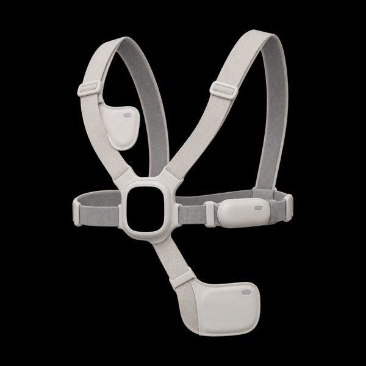</div>
        <div class="chip" style="right:6%;top:7%">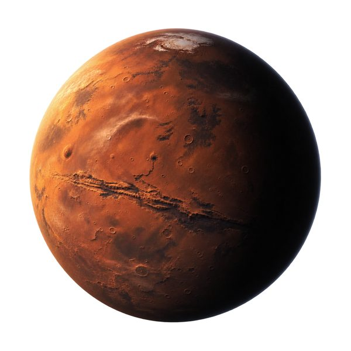</div>
        <div class="chip" style="right:12%;top:58%"></div>
        <div class="chip" style="left:38%;top:-3%"></div>
        <div class="chip" style="left:30%;bottom:-5%"></div>
        <div class="chip" style="right:30%;bottom:-4%">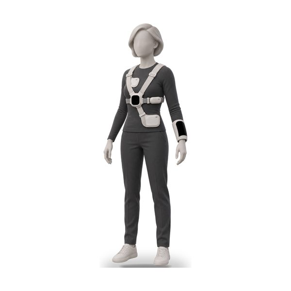</div>
      </div>
      <div class="ground" id="ground">
        <div class="cab"></div>
        <div class="shade"></div>
        <span class="ai">AI-generated</span>
      </div>
      <div class="copy" id="heroCopy"><h1>Eva</h1><p>Care that <b>guides</b>, <b>records</b> and <b>warns</b> on the way to Mars.</p></div>
      <div class="clock">Mission day 212 · Earth 14 min away</div>
      <div class="hint">Scroll</div>
    </div>
  </section>

  <!-- 2 · Statement -->
  <section class="space statement g" aria-labelledby="st">
    
    <p class="big" id="st" data-reveal>Fifteen passengers. <span class="mk">No doctor</span> on board. Earth up to <span class="mk">22 minutes</span> away.</p>
    <div class="row">
      <p data-reveal>Wristband<small>Large flexible touch screen, alerts, voice and the help button.</small></p>
      <p data-reveal>Chest harness<small>Non-invasive contact sensors, plus validated emergency modules.</small></p>
      <p data-reveal>Ship hub<small>Runs Eva offline. No internet, no Earth needed.</small></p>
    </div>
  </section>

  <!-- 3 · Wristband orbit + exploded -->
  <section class="pinsec xsec wsec" id="wsec" aria-labelledby="wh">
    <div class="stage">
      
      <div class="head"><p class="label" id="wh">Wristband</p><h2 class="prop">A screen big enough to follow under stress</h2><p class="note">Curved to the forearm, one action per screen.</p></div>
      <div class="obj">
        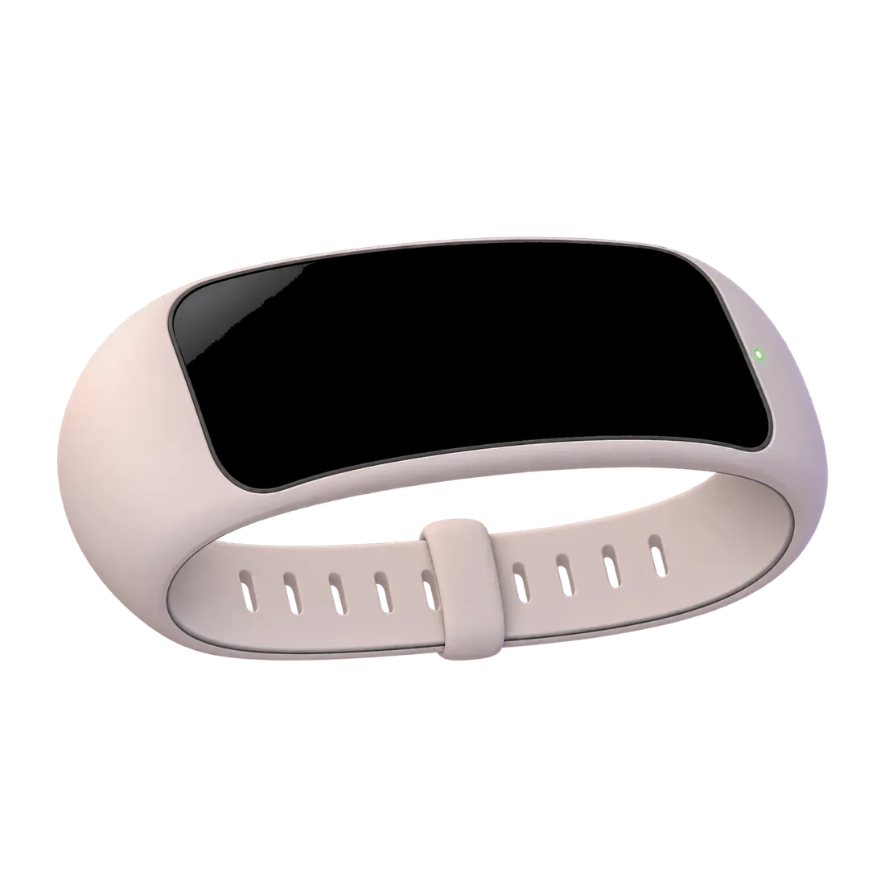
        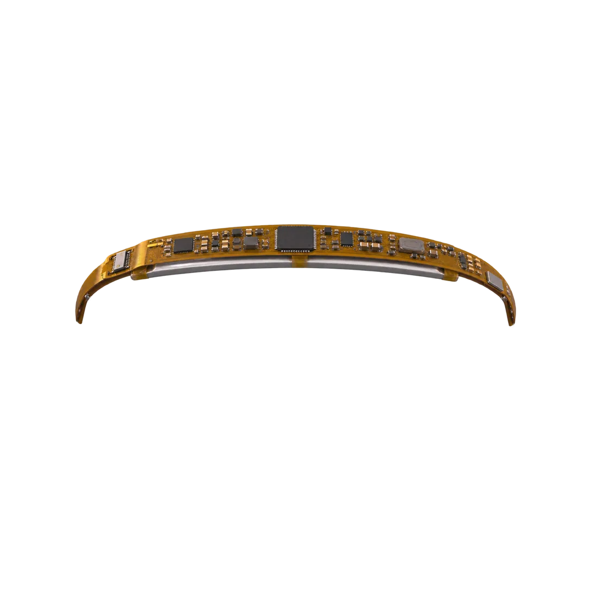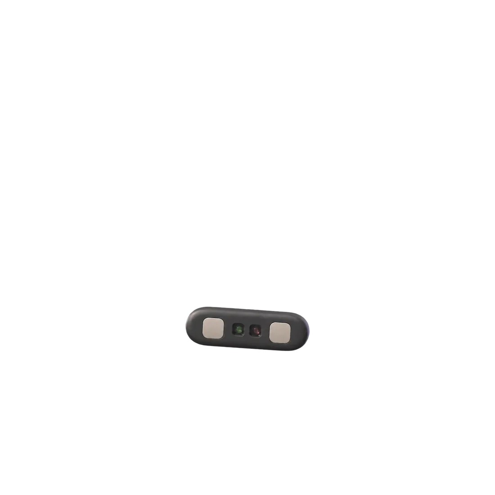
      </div>
      <div class="ledger"><div class="lbl" data-at=".6">Flexible touch screen<small>Target: ≥100 mm active side</small></div><div class="lbl" data-at=".66">Battery and board<small>Firmware runs locally</small></div><div class="lbl" data-at=".72">Strap<small>Help button, voice, vibration</small></div><div class="lbl" data-at=".78">Sensor window<small>Non-invasive, on the skin</small></div></div>
      <p class="step" id="wstep">Turn</p>
      <span class="ai">AI-generated</span>
    </div>
  </section>

  <!-- 4 · Case A (pinned, text in the scene's right negative space) -->
  <section class="pinsec storyp caseA" id="caseA" aria-labelledby="ca">
    <div class="stage">
      
      
      <div class="hl" id="hlA"></div>
      <div class="ptxt">
        <p class="label" id="ca">Case A · Cannot act</p>
        <div class="sts">
          <div class="st" data-box="15.8,6.2,44,88.8"><span class="n">01 / 04</span><h3>The harness and wristband notice no response</h3><p>Eva cross-checks independent signals before it calls anyone. Stillness alone is not an emergency.</p></div>
          <div class="st" data-box="17.5,61.5,12,15.5"><span class="n">02 / 04</span><h3>Eva calls the nearest passenger</h3><p>Their wristband shows where to go. If they do not confirm in 20 seconds, Eva calls the next one.</p></div>
          <div class="st" data-box="17.5,44,17.5,33"><span class="n">03 / 04</span><h3>One instruction at a time</h3><p>The helper follows big pictures, voice and short text on their own wrist, linked to the patient's harness.</p></div>
          <div class="st" data-box=""><span class="n">04 / 04</span><h3>Everyone else gets a quiet notice</h3><p>Every step, reading and decision goes into the log for the ship and for Earth.</p></div>
        </div>
        <div class="bar"><i></i></div>
      </div>
    </div>
  </section>

  <!-- 5 · Case B (pinned) -->
  <section class="pinsec storyp caseB" id="caseB" aria-labelledby="cb">
    <div class="stage">
      <div class="ptxt">
        <p class="label" id="cb">Case B · Can act</p>
        <div class="sts">
          <div class="st" data-ui="0" data-l="0"><span class="n">01 / 04</span><h3>Eva checks you can move and follow steps</h3><p>Being awake is not the same as being able to help yourself.</p></div>
          <div class="st" data-ui="1" data-l="1"><span class="n">02 / 04</span><h3>The harness lights the item you need</h3><p>The wristband shows one action; a light on the harness points to the right compartment.</p></div>
          <div class="st" data-ui="2" data-l="2"><span class="n">03 / 04</span><h3>Step by step, with voice and vibration</h3><p>Repeat and Get help stay on screen the whole time.</p></div>
          <div class="st" data-ui="3" data-l="0"><span class="n">04 / 04</span><h3>If you can't, a passenger takes over</h3><p>Eva switches to Case A and calls the nearest helper.</p></div>
        </div>
        <div class="bar"><i></i></div>
      </div>
      <div class="bdev">
        <div class="w"><div class="scr" aria-live="polite"><div class="pict" id="uiP">?</div><div class="tx"><small id="uiK">Eva · Step 1 of 3</small><span id="uiT">Can you sit up? Tap Yes</span></div></div></div>
        <div class="h" id="harness" data-l="0">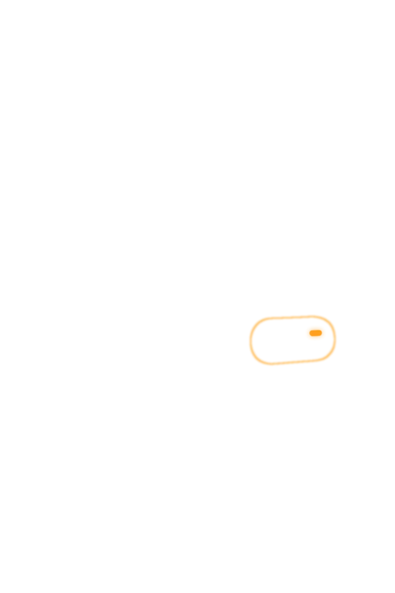</div>
      </div>
      <span class="ai dk">AI-generated renders · screen content is live HTML</span>
    </div>
  </section>

  <!-- 6 · Harness exploded -->
  <section class="pinsec xsec hsec" id="hsec" aria-labelledby="hh">
    <div class="stage">
      
      <div class="s2">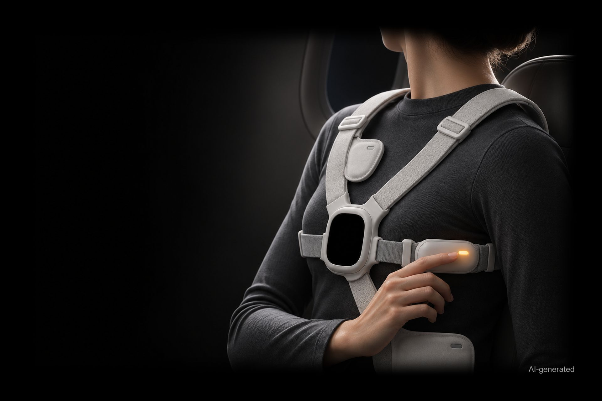</div>
      <div class="head"><p class="label" id="hh">Harness</p><h2 class="prop">Sensors on the body, help within reach</h2><p class="note">Monitoring stays non-invasive. Emergency treatment comes from validated modules, never from a chat model.</p></div>
      <div class="obj">
        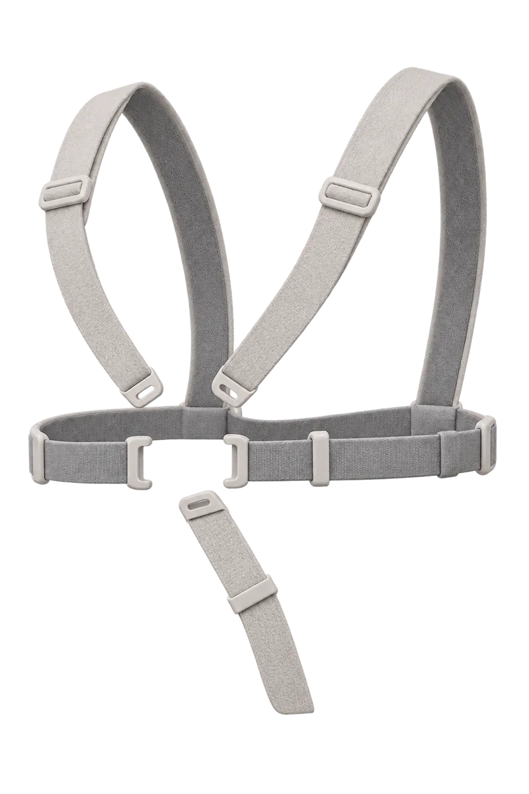
        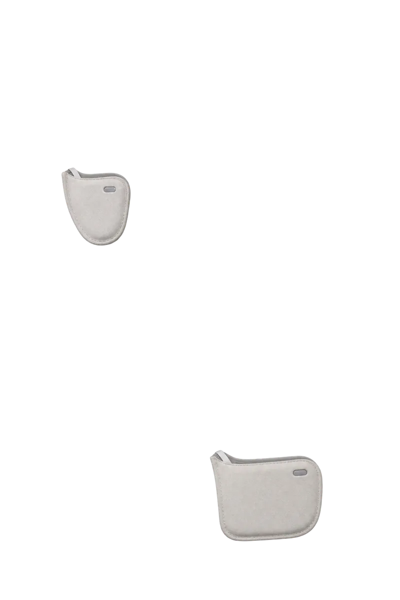
        
        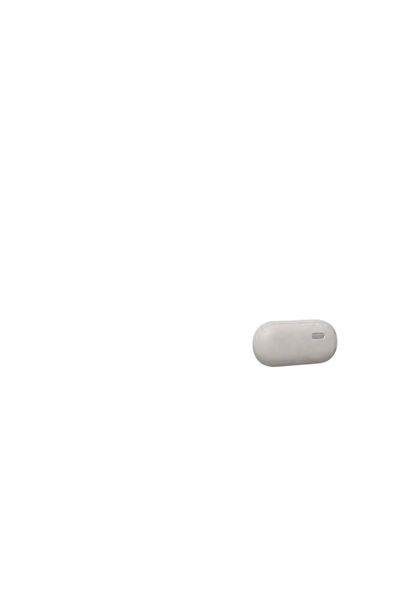
        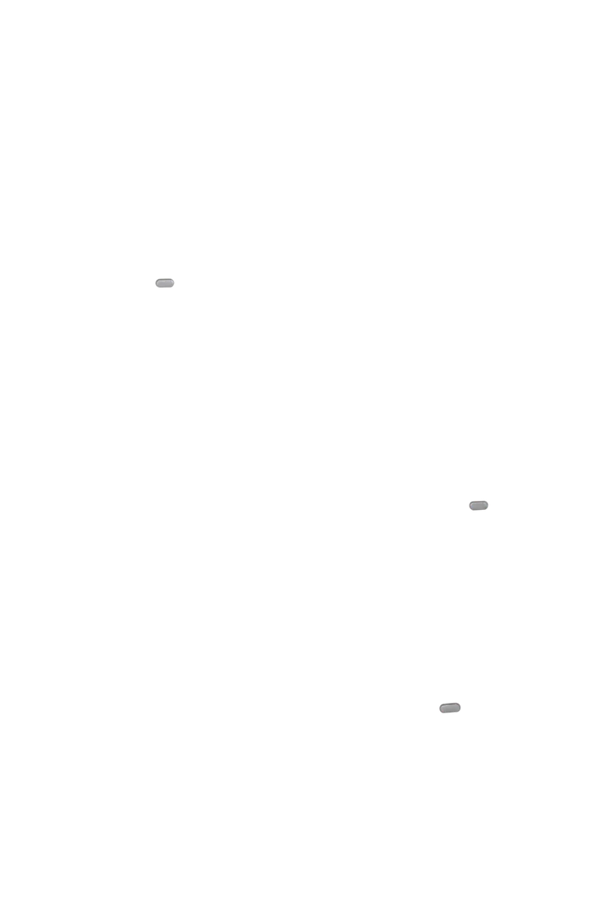
        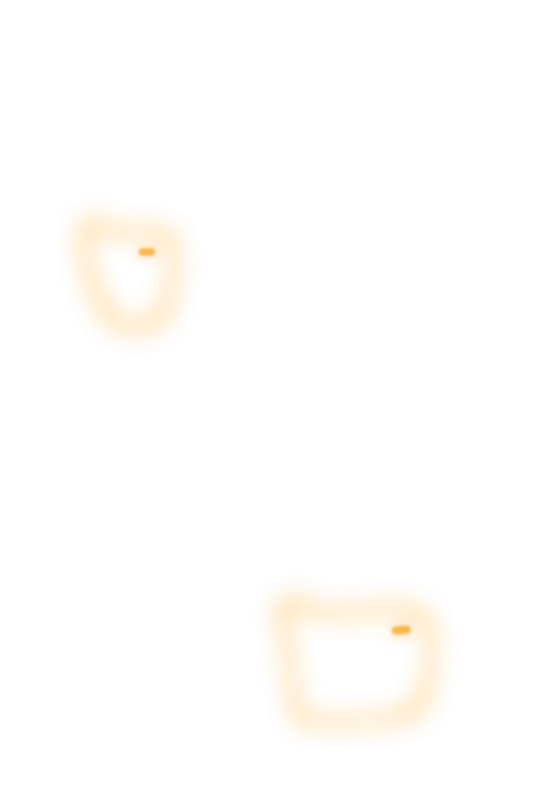
      </div>
      <div class="ledger"><div class="lbl" data-at=".42">Defibrillation pads<small>Validated rhythm analysis decides</small></div><div class="lbl" data-at=".48">Core module<small>Sensors and the link to the wristband</small></div><div class="lbl" data-at=".54">Injectable compartment<small>Route and drug still under study</small></div><div class="lbl" data-at=".6">Status lights<small>Show the item to use</small></div></div>
      <p class="step" id="hstep">Close-up</p>
      <span class="ai">AI-generated</span>
    </div>
  </section>

  <!-- 7 · Solar alert -->
  <section class="pinsec solar" id="solar" aria-labelledby="sa">
    <div class="stage">
      
      <div class="sun">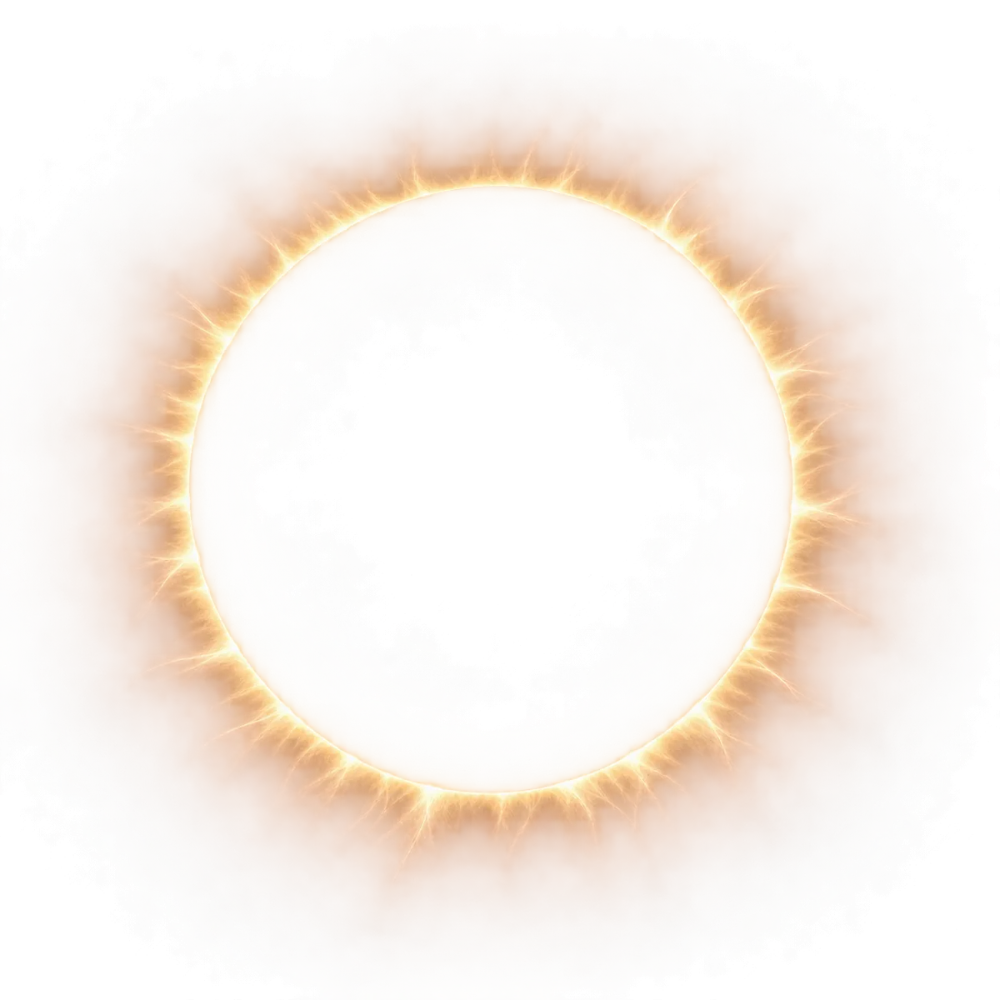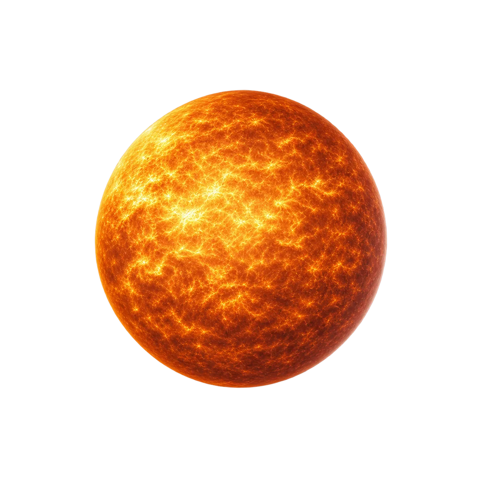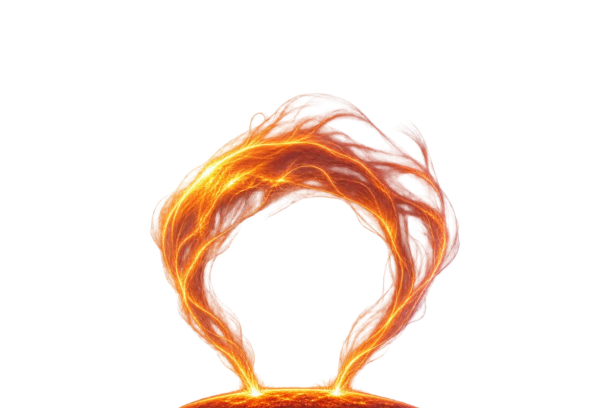</div>
      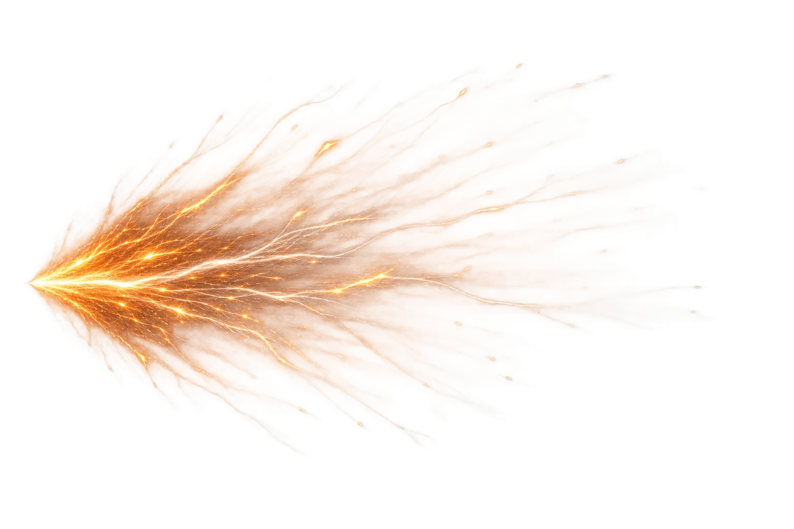
      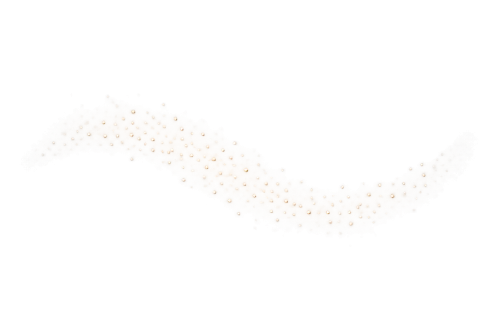
      <canvas id="particles" aria-hidden="true"></canvas>
      <div class="ship">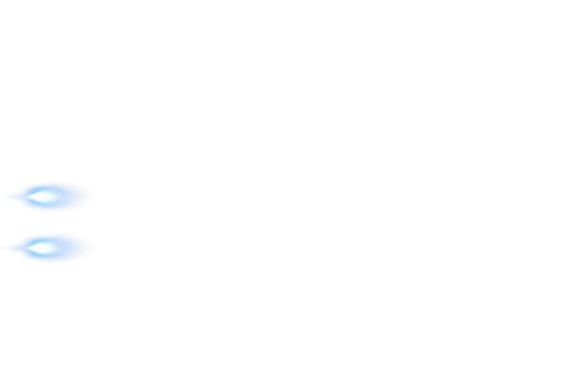</div>
      <div class="txt"><p class="label" id="sa">Solar alert</p><h2 class="prop">Minutes of warning before the particles arrive</h2><p class="note">Eva reads NASA DONKI flare reports and NOAA GOES proton data. X-rays arrive with the light; the particles that follow leave time to reach the shelter.</p></div>
      <div class="meter" id="meter">Proton flux · 2 pfu</div>
      <div class="alert" role="status"><small>SOLAR ALERT</small><b>Go to the shelter</b><span>Particles arrive in about 18 min. Your wristband shows the way.</span></div>
      <span class="ai">AI-generated</span>
    </div>
  </section>

  <!-- 8 · Earth link -->
  <section class="pinsec link-sec" id="linkSec" aria-labelledby="el">
    <div class="stage">
      
      <div class="head"><div><p class="label" id="el">Earth link</p><h2 class="prop" style="max-width:12em">Every step recorded, even minutes from Earth</h2></div><p class="lt" id="lt">3 min<small>one-way light time</small></p></div>
      <div class="playhead" aria-hidden="true"></div>
      <div class="track" id="track">
        <div class="planet"></div>
        <div class="dash"></div>
        <div class="packet"><b>12:01:04</b><span>No response · passenger 07</span></div>
        <div class="packet"><b>12:01:05</b><span>Helper assigned · passenger 03</span></div>
        <div class="packet"><b>ECG strip</b><span>Signed, chained, queued</span></div>
        <div class="packet"><b>Step 2 done</b><span>Breathing checked</span></div>
        <div class="packet"><b>ACK</b><span>Received on Earth</span></div>
        <div class="dash"></div>
        <div class="planet"></div>
      </div>
      <span class="ai">AI-generated</span>
    </div>
  </section>

  <!-- 9 · Mars arrival -->
  <section class="arrive" id="arrive" aria-label="Arrival">
    <div class="stage"><div class="dots"></div><p class="cap prop">Arrive with every step on record.</p><span class="ai">AI-generated</span></div>
  </section>

  <!-- 10 · Why -->
  <section class="g" aria-labelledby="why" style="margin-top:96px">
    <div class="sh"><h2 id="why">Why it matters</h2></div>
    <div class="ed" data-reveal>
      <p class="prop">Care that does not wait for a doctor</p>
      <div class="body">
        <p>Around 70% of astronauts on six-to-twelve-month missions aboard the ISS show significant vision changes, and 85% of 71 astronauts reported at least one nasal or sinus problem. On a commercial flight to Mars most passengers will not be clinicians, and Earth may be twenty minutes away by radio.</p>
        <p>We built Eva on NASA's open Inspiration4 data (OSDR OSD-575 and OSD-569). Against each crew member's own baseline, the metabolic panel the day after landing showed 16 of 72 changes, against 7 with standard laboratory ranges.</p>
        <p>Eva guides, records and warns. Shocks and injections belong to validated subsystems, never to a chat model.</p>
      </div>
    </div>
  </section>

  <!-- 11 · Slabs -->
  <section aria-labelledby="kit">
    <div class="g"><div class="sh"><h2 id="kit">WearMeds</h2></div></div>
    <div class="slabs">
      <article class="slab g" data-slab>
        <div><p class="name">Wristband</p><div class="specs"><div>Screen<span>Flexible touch, target ≥100 mm active side</span></div><div>Talks to<span>Ship hub over LoRa</span></div><div>Always on<span>Help button, voice, vibration</span></div></div></div>
        <div class="pic">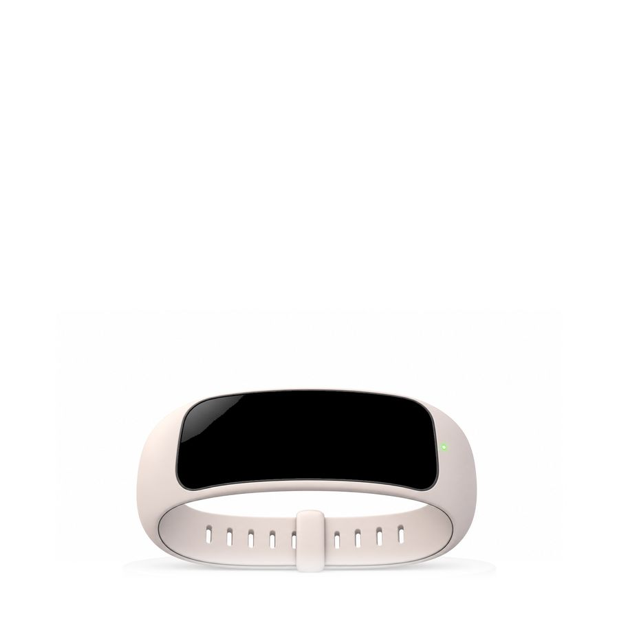<span class="ai dk">AI-generated</span></div>
      </article>
      <article class="slab dark g" data-slab>
        <div><p class="name">Harness</p><div class="specs"><div>Sensors<span>Contact, non-invasive</span></div><div>Modules<span>Defibrillation, emergency injectable</span></div><div>Guides<span>Lights the item to use</span></div></div></div>
        <div class="pic">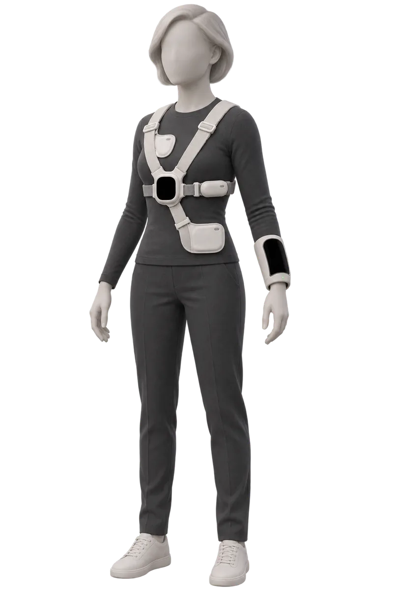<span class="ai">AI-generated</span></div>
      </article>
      <article class="slab g" data-slab>
        <div><p class="name">Ship hub</p><div class="specs"><div>Runs<span>Eva's medical AI, offline</span></div><div>Keeps<span>The signed log of every step</span></div><div>Sends<span>Queued reports to Earth</span></div></div></div>
        <div class="pic"><span class="ai dk">AI-generated</span></div>
      </article>
    </div>
    <div class="g"><div class="parts" id="parts">
      <div class="part-card"><div class="im"></div><b>Screen</b><span>Wristband</span></div>
      <div class="part-card"><div class="im"></div><b>Battery and board</b><span>Wristband</span></div>
      <div class="part-card"><div class="im"></div><b>Sensor window</b><span>Wristband</span></div>
      <div class="part-card"><div class="im"></div><b>Defibrillation pads</b><span>Harness</span></div>
      <div class="part-card"><div class="im"></div><b>Core module</b><span>Harness</span></div>
      <div class="part-card"><div class="im">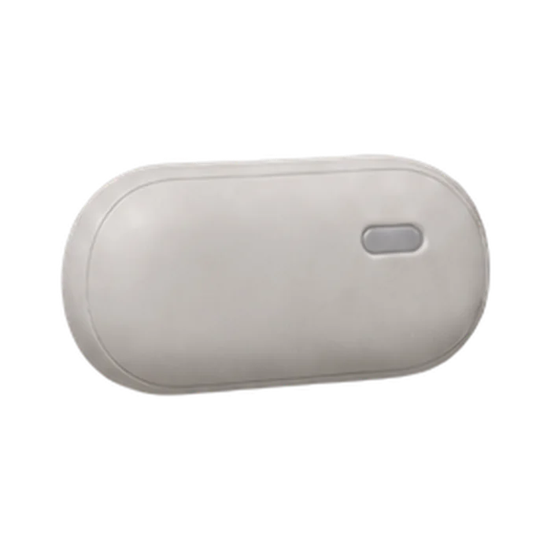</div><b>Injectable compartment</b><span>Harness</span></div>
    </div></div>
  </section>

  <!-- 12 · Business -->
  <section class="g" aria-labelledby="model">
    <div class="sh"><h2 id="model">Business</h2></div>
    <div class="ed" data-reveal>
      <p class="prop">Hardware once, Eva every mission</p>
      <div class="body">
        <p>Operators buy a WearMeds kit for each passenger and run Eva on the ship hub, licensed per mission.</p>
        <p>Bands come in sizes and finishes, the harness takes new validated modules, and the same platform serves orbital stays, lunar bases and remote work on Earth.</p>
      </div>
    </div>
  </section>

  <section class="g team-sec" aria-label="Team"><div id="team"></div></section>

  <section class="g close" id="contact" aria-labelledby="inv">
    <div class="sh"><h2>Contact</h2></div>
    <p id="inv">To see Eva working or to discuss a mission, start here:</p>
    <ul>
      <li><a href="https://claude.ai/artifact/DjrUadizcmVevJFVpCqR4m">Open the prototype <svg viewBox="0 0 46 46" aria-hidden="true"><path d="M10 36 36 10M14 10h22v22" fill="none" stroke="currentColor" stroke-width="3"/></svg></a></li>
      <li><a href="https://claude.ai/artifact/CXQN7Fn7UWVp6gWXPRfgAK">Read the research <svg viewBox="0 0 46 46" aria-hidden="true"><path d="M10 36 36 10M14 10h22v22" fill="none" stroke="currentColor" stroke-width="3"/></svg></a></li>
    </ul>
  </section>
</main>

<footer class="foot g" id="foot">
  <p class="notice" id="ai">All images are AI-generated concept art made with an OpenAI image model through Codex, from prompts by team Sanjo-X written with Claude. They contain no NASA insignia or branding. Eva is a concept for NASA Space Apps Challenge 2026 and is not a medical device.</p>
  <div class="mark"><svg viewBox="0 0 1400 120" role="img" aria-label="Eva by WearMeds"><text x="0" y="104" textLength="1400" lengthAdjust="spacingAndGlyphs" fill="currentColor" font-family="PP Neue Montreal, Inter, Arial, sans-serif" font-size="132">Eva by WearMeds</text></svg></div>
  <div class="util"><span>© 2026 Sanjo-X · Space Apps Rosario</span><ul><li><a class="u" href="#ai">AI notice</a></li><li><a class="u" href="https://ccmc.gsfc.nasa.gov/tools/DONKI/">Data sources</a></li></ul></div>
</footer>

<script src="team-rail.js"></script>
<script>
(()=>{
const reduce=matchMedia('(prefers-reduced-motion: reduce)').matches;
const clamp=(v,a=0,b=1)=>Math.max(a,Math.min(b,v));
const io2=t=>t<.5?2*t*t:1-Math.pow(-2*t+2,2)/2, ic3=t=>t<.5?4*t*t*t:1-Math.pow(-2*t+2,3)/2, oc3=t=>1-Math.pow(1-t,3);
const docTop=el=>{let y=0;for(let n=el;n;n=n.offsetParent)y+=n.offsetTop;return y};
const V=()=>innerHeight, NAV=72;
const scenes=[], measures=[]; let ticking=false;
const add=f=>scenes.push(f), onMeasure=f=>measures.push(f);
function frame(){ticking=false;const y=scrollY;for(const s of scenes)s(y)}
function req(){if(!ticking){ticking=true;requestAnimationFrame(frame)}}
addEventListener('scroll',req,{passive:true});
/* pinned progress helper */
function pinP(sec,y){const st=sec.querySelector('.stage');const len=sec.offsetHeight-st.offsetHeight;return reduce?1:clamp((y-sec._top+NAV)/(len||1))}
const pins=[...document.querySelectorAll('.pinsec')]; onMeasure(()=>pins.forEach(s=>s._top=docTop(s)));

/* 1 · Hero */
const hero=document.getElementById('hero'), hst=hero.querySelector('.stage'), ground=document.getElementById('ground'), copy=document.getElementById('heroCopy');
const chips=[...hero.querySelectorAll('.chip')]; let H={};
onMeasure(()=>{const sw=hst.clientWidth, sh=hst.clientHeight; const cw=sw<700?sw*.88:Math.min(sw*.56,720), ch=Math.min(sh-120,560); H={L:(sw-cw)/2,T:(sh-ch)/2,sw};
  chips.forEach(c=>c.style.setProperty('--k',0));
  const s=hst.getBoundingClientRect(), cx=sw/2, cy=sh/2;
  chips.forEach((c,i)=>{const r=c.getBoundingClientRect();const tx=r.left-s.left+r.width/2-cx,ty=r.top-s.top+r.height/2-cy,d=Math.hypot(tx,ty)||1;c.style.setProperty('--fx',(tx/d*sw*.55).toFixed(1)+'px');c.style.setProperty('--fy',(ty/d*sh*.55).toFixed(1)+'px');c.style.setProperty('--turn',(i%2?-8:9)+'deg')})});
add(y=>{const p=pinP(hero,y), s=reduce?1:io2(clamp((p-.02)/.45)), k=reduce?1:clamp(p/.55)**1.6, q=reduce?0:clamp((p-.5)/.5);
  const it=H.T*(1-s), il=H.L*(1-s);
  ground.style.setProperty('--it',it+'px');ground.style.setProperty('--ib',it+'px');ground.style.setProperty('--il',il+'px');ground.style.setProperty('--ir',il+'px');
  hst.style.setProperty('--s',clamp((s-.5)/.5).toFixed(3));hst.style.setProperty('--q',q.toFixed(3));
  const sw=H.sw; copy.style.setProperty('--cl',(il+(sw<700?20:40)*(1-s)+20*s)+'px');copy.style.width=Math.min(560,Math.max(220,sw-2*il-(sw<700?40:80)))+'px';
  chips.forEach(c=>c.style.setProperty('--k',k.toFixed(3)))});

/* reveals */
const rev=[...document.querySelectorAll('[data-reveal]')];
if(!reduce)rev.forEach(el=>{if(el.getBoundingClientRect().top>innerHeight)el.classList.add('pre')});
add(()=>{const lim=innerHeight*.88;for(const el of rev)if(!el.classList.contains('in')&&el.getBoundingClientRect().top<lim){el.classList.remove('pre');el.classList.add('in')}});

/* labels helper for exploded scenes */
function labels(stage,p){stage.querySelectorAll('.lbl').forEach(l=>l.style.setProperty('--lo',clamp((p-+l.dataset.at)/.06).toFixed(3)))}

/* 3 · Wristband orbit + exploded */
const ws=document.getElementById('wsec'), wst=ws.querySelector('.stage'), orbs=[...ws.querySelectorAll('.orb')], wparts=[...ws.querySelectorAll('.part')], wstep=document.getElementById('wstep');
wparts.forEach(pp=>{pp.style.setProperty('--dy',(+pp.dataset.dy||0)+'%')});
add(y=>{const p=pinP(ws,y);
  // orbit 0–.4: crossfade -60 → +60 then settle on 0
  const o=clamp(p/.36)*4; orbs.forEach((im,i)=>{let a=clamp(1-Math.abs(o-i));if(p>=.36)a=0;im.style.opacity=a.toFixed(3)});
  const toParts=clamp((p-.36)/.06); // swap to exploded set (wx0 camera == or-000)
  if(p<.36){orbs[2].style.opacity=Math.max(+orbs[2].style.opacity,0)}
  const e=reduce?1:ic3(clamp((p-.44)/.3));
  wparts.forEach(pp=>{pp.style.opacity=(p<.36?0:toParts).toFixed(3);pp.style.setProperty('--e',e.toFixed(3))});
  labels(wst,p);
  wstep.textContent=p<.36?'Orbit · '+Math.round(-60+120*clamp(p/.36))+'°':p<.44?'Assembled':'Exploded view';
});

/* 4–5 · pinned step scenes */
function steps(id,onStep){const sec=document.getElementById(id), st=sec.querySelector('.stage'), sts=[...sec.querySelectorAll('.st')], bar=sec.querySelector('.bar'); let cur=-2;
  add(y=>{const p=pinP(sec,y), n=sts.length; const i=Math.min(n-1,Math.floor(p*n*0.999)); bar.style.setProperty('--sp',p.toFixed(3));
    if(i!==cur){cur=i;sts.forEach((e,k)=>e.classList.toggle('on',k===i));onStep(i,sts[i],st)}});
  return ()=>{if(cur>=0)onStep(cur,sts[cur],st)}}
const hlA=document.getElementById('hlA');
function coverBox(stage,box){const img=[...stage.querySelectorAll('.sc')].find(i=>i.offsetParent!==null&&i.naturalWidth); if(!img||!box)return null;
  const W=img.clientWidth,H=img.clientHeight,iw=img.naturalWidth,ih=img.naturalHeight,sc=Math.max(W/iw,H/ih);
  const pos=getComputedStyle(img).objectPosition.split(' ').map(v=>parseFloat(v)/100); const ox=img.offsetLeft+(W-iw*sc)*pos[0], oy=img.offsetTop+(H-ih*sc)*pos[1];
  const [x,y,w,h]=box.split(',').map(Number); return [ox+x/100*iw*sc, oy+y/100*ih*sc, w/100*iw*sc, h/100*ih*sc]}
const redoA=steps('caseA',(i,st,stage)=>{const r=coverBox(stage,st.dataset.box);
  if(!r){hlA.style.setProperty('--ho',0);return} hlA.style.setProperty('--hx',r[0]+'px');hlA.style.setProperty('--hy',r[1]+'px');hlA.style.setProperty('--hw',r[2]+'px');hlA.style.setProperty('--hh',r[3]+'px');hlA.style.setProperty('--ho',1)});
onMeasure(redoA); document.querySelectorAll('#caseA .sc').forEach(i=>i.addEventListener('load',redoA));
const UI=[["?","Eva · Step 1 of 3","Can you sit up? Tap Yes"],["→","Eva · Step 2 of 3","Open the lit compartment on your harness"],["1","Eva · Step 3 of 3","Follow the picture. Say Repeat anytime"],["!","Eva · Calling help","Passenger 03 is on the way"]];
const uiP=document.getElementById('uiP'),uiK=document.getElementById('uiK'),uiT=document.getElementById('uiT'),harness=document.getElementById('harness');
steps('caseB',(i,st)=>{const u=UI[Math.max(0,i)];uiT.style.opacity=0;setTimeout(()=>{uiP.textContent=u[0];uiK.textContent=u[1];uiT.textContent=u[2];uiT.style.opacity=1},reduce?0:180);harness.dataset.l=st?st.dataset.l:'0'});

/* 6 · Harness exploded */
const hs=document.getElementById('hsec'), hstg=hs.querySelector('.stage'), hparts=[...hs.querySelectorAll('.part')], hglow=[...hs.querySelectorAll('.glow')], hstep=document.getElementById('hstep');
hparts.forEach(pp=>{pp.style.setProperty('--dx',(+pp.dataset.dx||0)+'%');pp.style.setProperty('--dy',(+pp.dataset.dy||0)+'%');pp.style.setProperty('--ds',+pp.dataset.ds||0)});
add(y=>{const p=pinP(hs,y); const z=reduce?1:io2(clamp((p-.08)/.2)); hstg.style.setProperty('--z',z.toFixed(3));
  const e=reduce?0:ic3(clamp((p-.32)/.25))*(1-ic3(clamp((p-.72)/.08))); hparts.forEach(pp=>pp.style.setProperty('--e',e.toFixed(3)));
  hstg.querySelector('.obj').style.opacity=z.toFixed(3);
  hglow[0].style.opacity=clamp((p-.8)/.08).toFixed(3); hglow[1].style.opacity=clamp((p-.88)/.08).toFixed(3);
  labels(hstg,p); if(p>.7)hstg.querySelectorAll('.lbl').forEach(l=>l.style.setProperty('--lo',clamp(1-(p-.7)/.06).toFixed(3)));
  hstep.textContent=p<.28?'Close-up':p<.32?'Assembled':p<.72?'Exploded view':p<.8?'Reassembled':'Lights: pads, then compartment';
});

/* 7 · Solar */
const so=document.getElementById('solar'), sst=so.querySelector('.stage'), meter=document.getElementById('meter'), cv=document.getElementById('particles'), cx=cv.getContext('2d'); let solarP=0, parts=[], running=false;
onMeasure(()=>{const r=devicePixelRatio>1?2:1;cv.width=sst.clientWidth*r;cv.height=sst.clientHeight*r;cx.setTransform(r,0,0,r,0,0)});
add(y=>{const p=pinP(so,y); solarP=p;
  sst.style.setProperty('--a',ic3(clamp(p/.3)));sst.style.setProperty('--b',clamp((p-.25)/.25));sst.style.setProperty('--c',clamp((p-.42)/.4));sst.style.setProperty('--d',oc3(clamp((p-.72)/.28)));
  meter.textContent='Proton flux · '+Math.round(2+38*clamp((p-.42)/.45))+' pfu'+(p>.62?' · above S1':'');
  if(!running&&p>.42&&p<1&&!reduce){running=true;requestAnimationFrame(tick)}});
function tick(){const w=sst.clientWidth,h=sst.clientHeight;cx.clearRect(0,0,w,h);const c=clamp((solarP-.42)/.4),live=solarP>.42&&solarP<1;
  const sx=w*.72,sy=h*.32,ex=w*.26,ey=h*.74,mx=w*.5,my=h*.24;
  if(live)for(let n=0;n<Math.round(6*c+1);n++)parts.push({t:0,v:.004+Math.random()*.006,o:(Math.random()-.5)*90});
  parts=parts.filter(q=>q.t<1);
  for(const q of parts){q.t+=q.v;const t=q.t,u=1-t,x=u*u*sx+2*u*t*mx+t*t*ex,yy=u*u*sy+2*u*t*my+t*t*ey+q.o*Math.sin(t*3.14);cx.fillStyle=`rgba(255,${150+Math.round(80*t)},${80+Math.round(120*t)},${.85*(1-t)})`;cx.fillRect(x,yy,2,2)}
  if(parts.length||live)requestAnimationFrame(tick);else running=false}

/* 8 · Earth link */
const ls=document.getElementById('linkSec'), lst=ls.querySelector('.stage'), track=document.getElementById('track'), lt=document.getElementById('lt');
const packets=[...track.querySelectorAll('.packet')], planets=[...track.querySelectorAll('.planet')]; let L={run:0,items:[],pl:[]};
onMeasure(()=>{L.run=Math.max(0,track.scrollWidth-lst.clientWidth);ls.style.height=(lst.offsetHeight+L.run+V()*.3)+'px';const mid=lst.clientWidth/2;
  L.items=packets.map(el=>({el,a:el.offsetLeft-mid,b:el.offsetLeft+el.offsetWidth-mid}));L.pl=planets.map(el=>({el,c:el.offsetLeft+el.offsetWidth/2}))});
add(y=>{const p=pinP(ls,y), x=clamp(p/.85)*L.run; track.style.setProperty('--x',x.toFixed(1));
  L.items.forEach(it=>it.el.style.setProperty('--f',clamp((x-it.a)/(it.b-it.a)).toFixed(3)));
  const mid=lst.clientWidth/2; L.pl.forEach(o=>{const d=Math.abs(o.c-x-mid)/lst.clientWidth;const k=clamp(1-d*1.6);o.el.style.setProperty('--ps',(0.8+0.2*k).toFixed(3));o.el.style.setProperty('--pa',(0.25+0.75*k).toFixed(3))});
  lt.firstChild.textContent=Math.round(3+19*clamp(p/.85))+' min'});

/* 9 · Mars arrival halftone */
const ar=document.getElementById('arrive'), ast=ar.querySelector('.stage'); let AT=0; onMeasure(()=>AT=docTop(ar));
add(y=>{const r=reduce?1:io2(clamp((y+V()-AT-.1*V())/(V()*.9)));ast.style.setProperty('--r',r.toFixed(3));ast.style.setProperty('--cell',(46-40*r).toFixed(1)+'px');ast.style.setProperty('--rr',(20-18.8*r).toFixed(1)+'px')});

/* 11 · Slabs + dealt parts */
const slabs=[...document.querySelectorAll('[data-slab]')]; let SL=[]; onMeasure(()=>SL=slabs.map(s=>({s,top:docTop(s)})));
add(y=>{const v=V(),wide=innerWidth>900;SL.forEach((o,i)=>{const n=SL[i+1];const p=(n&&wide&&!reduce)?clamp((y+v-n.top-.15*v)/(.9*v)):0;o.s.style.setProperty('--p',p.toFixed(3))})});
const cards=[...document.querySelectorAll('.part-card')]; let PT=0; onMeasure(()=>{PT=docTop(document.getElementById('parts'));const cols=innerWidth>900?6:2;
  cards.forEach((c,i)=>{const col=i%cols, mid=(cols-1)/2;c.style.setProperty('--x0',((mid-col)*(cols===6?9:30))+'vw');c.style.setProperty('--y0',(80+(i%2?40:0))+'px');c.style.setProperty('--r0',((col-mid)*3)+'deg')})});
add(y=>{const v=V();cards.forEach((c,i)=>{const k=reduce?1:oc3(clamp((y+v-PT-.05*v-.04*v*i)/(.5*v)));c.style.setProperty('--k',k.toFixed(3))})});

/* wordmark */
const mark=document.querySelector('.mark'); let MT=0; onMeasure(()=>MT=docTop(mark));
add(y=>{const v=V();mark.style.setProperty('--w',(reduce?1:oc3(clamp((y+v-MT)/(mark.offsetHeight+v*.25)))).toFixed(3))});

/* team */
if(window.TeamRail)TeamRail.mount(document.getElementById('team'),[
 {name:'Lean',role:'Product & build lead',tasks:['Winners analysis','Happy path','Landing','AI models rationale','30 s video'],bio:'Turns the research into Eva’s product, landing and demo.',tags:['Product','Landing','Demo'],links:[]},
 {name:'Tomi',role:'Hardware & screens',tasks:['Energy budget and components','Screens','Wrist phone mount'],bio:'Picks the components, budgets every milliwatt and designs the screens.',tags:['Hardware','Energy','UI'],links:[]},
 {name:'Hassi',role:'Medical cases',tasks:['Acute cases','Medical variables'],bio:'Maps each emergency from signal to action.',tags:['Medicine','Cases'],links:[]},
 {name:'Naza',role:'Medical variables & scale',tasks:['Acute cases','Medical variables','Scalability'],bio:'Defines what we measure and how WearMeds scales.',tags:['Variables','Scale'],links:[]}
],{title:'Team',meta:'Sanjo-X · NASA Space Apps 2026',teamLine:'Sanjo-X · Space Apps Rosario',org:'Eva by WearMeds',bandLabel:'Crew',serialPrefix:'SX-'});

/* measure + go */
function measure(){measures.forEach(f=>f());req()}
measure();
if(document.fonts&&document.fonts.ready)document.fonts.ready.then(measure);
addEventListener('load',measure); let rt; addEventListener('resize',()=>{clearTimeout(rt);rt=setTimeout(measure,120)});
})();
</script>
